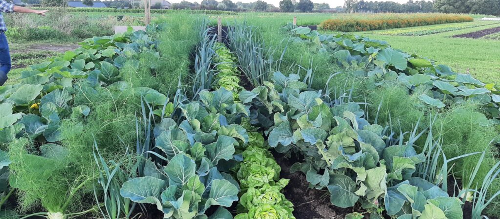
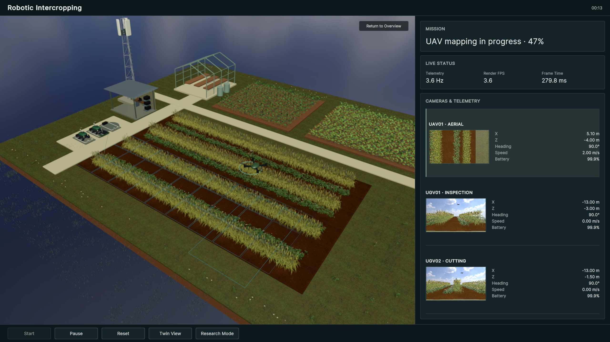
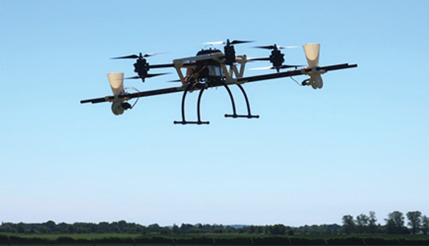
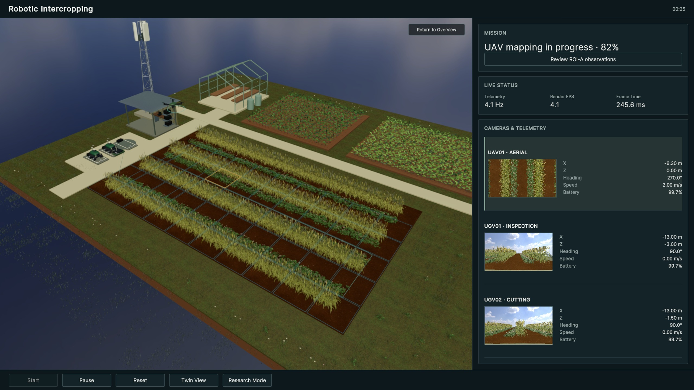
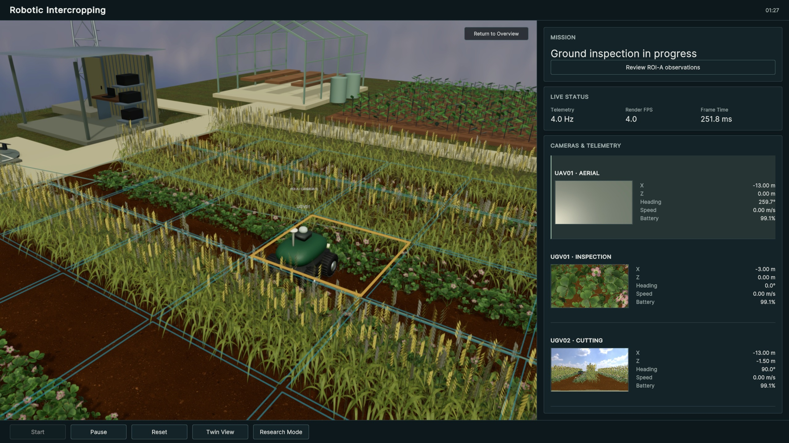
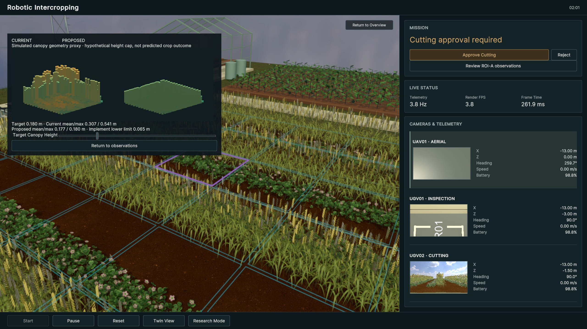
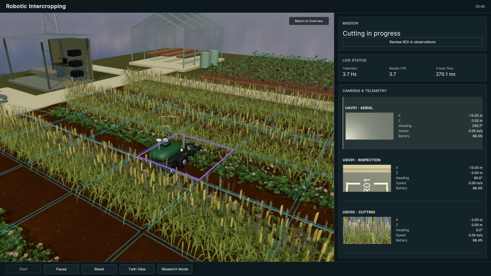
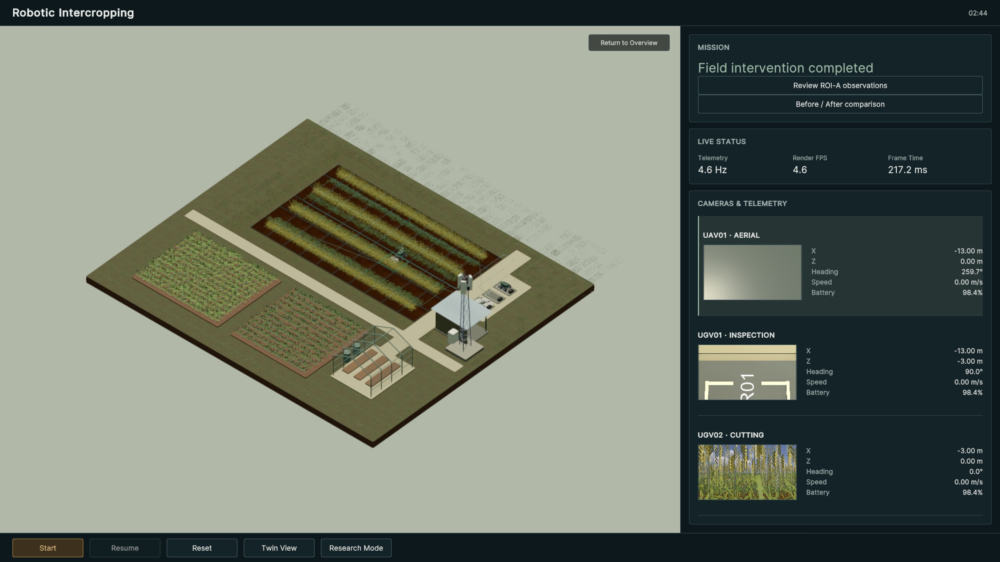

Understand competition
Observe how neighboring crops compete for light, water and nutrients as the canopy develops.
RESEARCH CONCEPT / YUNHAN ZHANG
Digital twin-based monitoring and supervised intervention for swarm-enabled robotic intercropping.
Watch the Unity demonstration ↗Explore the research ↓01 / RESEARCH MOTIVATION
Strip intercropping brings cash and service crops into the same field. Their interactions change with location and growth stage.

Observe how neighboring crops compete for light, water and nutrients as the canopy develops.
Combine aerial surveys with close-range ground observations in a shared, spatial field representation.
Connect evidence to operator review, selective action and re-observation to assess the result.
RESEARCH CONTEXT / SELECTED PUBLICATIONS
The Flourish system combines aerial surveys, collaborative mapping and targeted ground intervention.
Adapt complementary observations to mixed canopies and changing growth stages in strip intercropping.
The literature reviews information gathering with aerial and ground robot teams.
Balance information quality with energy, communication and task constraints during a field mission.
A farm-management framework connects digital state representations with monitoring and control.
Connect observation, supervised action and quantitative field validation for this intercropping use case.
Representative studies, not an exhaustive review. Integrated aerial–ground systems already exist. The challenges above define the scope of this proposal, rather than claiming an absence of prior work.
02 / EXPERIMENTAL SCENARIO
A simulated strip-intercropping research farm. Select a platform or a field element to examine its role in the proposed experiment.

SIMULATED / AERIAL SURVEY
The UAV surveys the field and marks a candidate region of interest. Both ground robots remain parked during aerial mapping.
03 / PROPOSED FRAMEWORK
Select a layer to explore its role. This architecture describes the research direction; the Unity prototype demonstrates the supervised mission workflow.
INPUT Crop and canopy observations
OUTPUT ROI candidates to the shared digital twin

AIRBORNE OBSERVATION
UAV monitoring provides field-scale observations of crop status and canopy traits, helping identify regions that need closer inspection.
04 / SUPERVISED WORKFLOW
Follow the recorded mission from aerial mapping to a shared field-state update. Scroll through the five stages, or select one directly.





01 / SURVEY
UAV01 maps the crop strips. Surveyed cells accumulate in the shared view, while ROI-A receives a distinct status.
Coverage cells and candidate ROI-A.
02 / INSPECT
After the UAV lands, UGV01 approaches ROI-A for close-range inspection, then clears the area before the cutting robot arrives.
Simulated ground inspection and ROI evidence.
03 / REVIEW & APPROVE
The operator reviews the recorded observations and the hypothetical canopy-height preview. Approval dispatches UGV02; rejection prevents cutting.
An explicit approval decision. This recording uses scripted approval.
04 / INTERVENE
UGV02 travels to the approved region and performs the demonstrator’s simplified cutting operation.
Simulated localized canopy change; no agronomic outcome inferred.
05 / UPDATE
The mission completes and the simulated field state updates. Real-world re-observation and intervention effectiveness remain validation work.
Updated simulation state and mission completion log.
All images above are frames from the supplied Unity recording. The canopy-height preview is a simulated geometry proxy, not a prediction of crop response.
05 / UNITY DEMONSTRATOR
Actual Unity runtime recording.
Approximately 50 seconds. Playback retimed; approval triggered by the recording script.
SURVEY
UAV mapping and candidate ROI identification.
Chapter times follow the recorded mission-state log.The 4K stream is encoded at high bitrate directly from the original Unity capture frames. A lighter 720p encode is also available. Source screenshots use 2× Unity screenshot supersampling from a 1920 × 1080 Game View.
The dashboard’s original FPS and frame-time readings remain visible. Low and variable rendering FPS occur during this supersampled capture with high-resolution RGB feeds. Fixed capture timing and retimed playback do not demonstrate real-time performance, and this upgrade does not claim a faster Unity runtime.
The approximately 50-second recording condenses the original mission. Approval is triggered by its recording script. RGB views and canopy state are simulated; this video does not validate physical sensors, resource-competition prediction, or intervention efficacy.
Future field validation: compare georeferenced aerial and ground observations, assess registration and task execution, and quantify crop response after re-observation.
RESEARCH TARGET
Integrate multi-source field monitoring, multi-robot collaboration and digital twin-based decision support into an experimentally validated framework for robotic intercropping.
Back to the field ↑